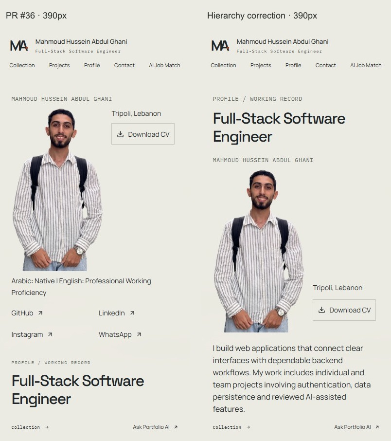
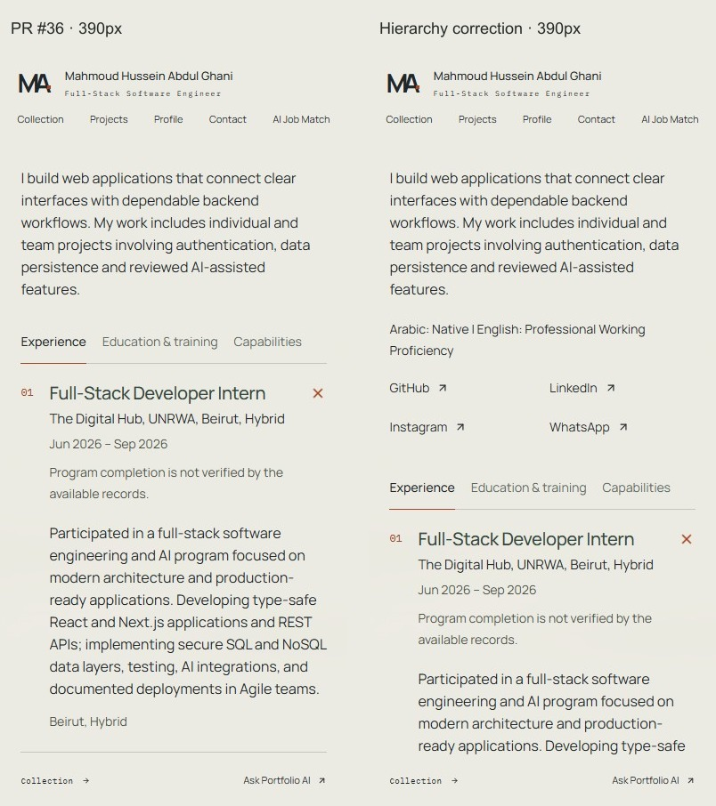
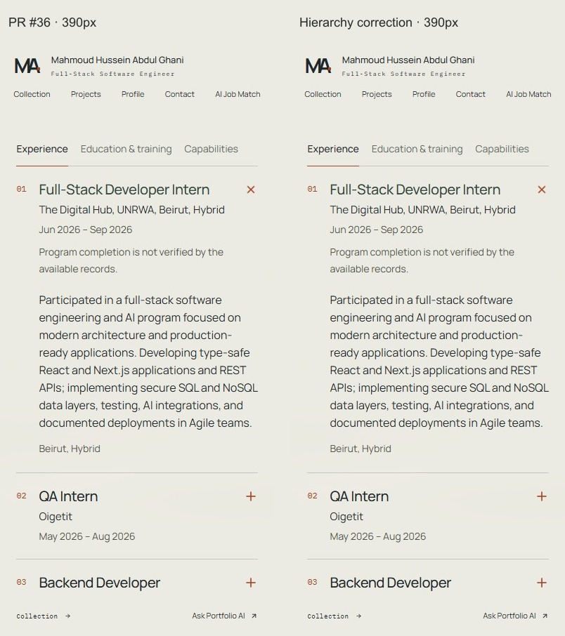
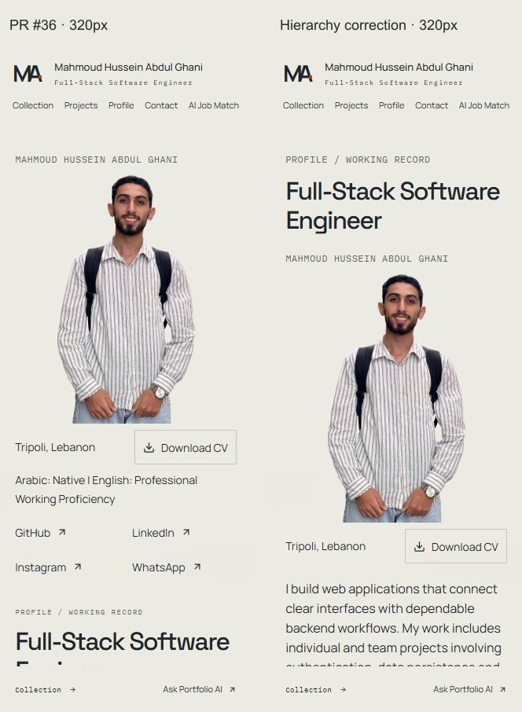
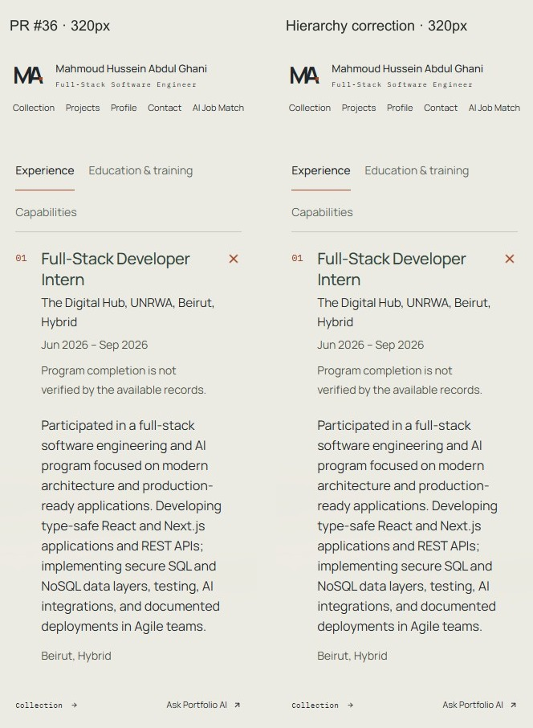
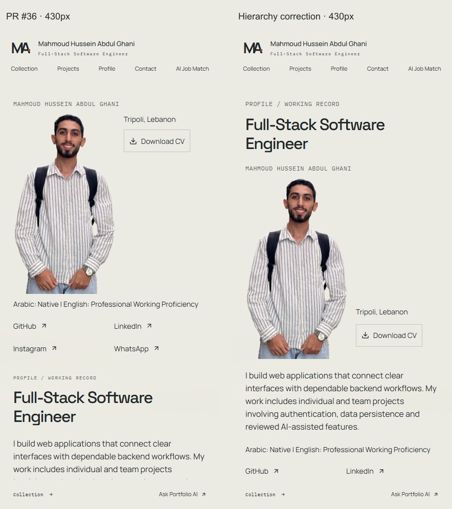
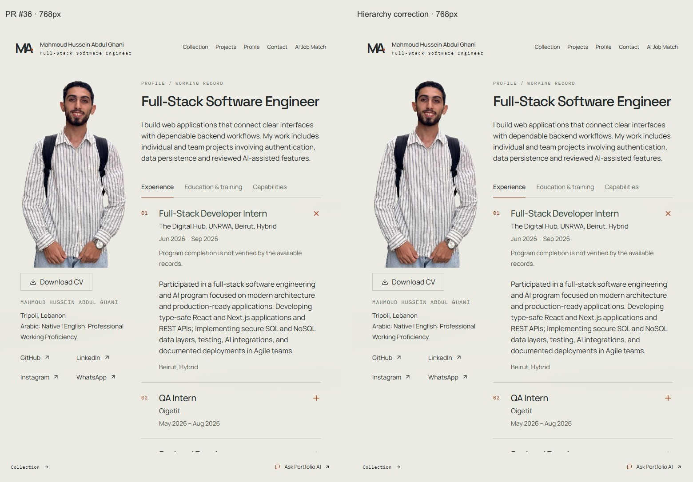
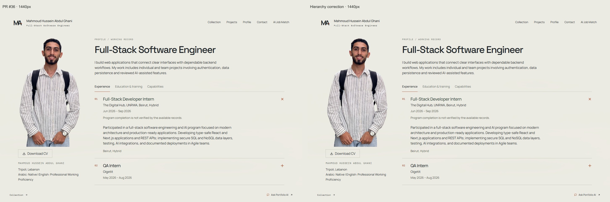

Profile portrait prototype
Mobile hierarchy correction against draft PR #36, commit f4851863056b2dd3ebc4528c4f935434acabd176. Left is PR #36; right is the correction. Both sides show the review route with the same faithful portrait and public content. Production /profile remains unchanged.
Interactive review prototype · Current production-style Profile · Download comparison package
Use this draft PR's Vercel Preview for review. Authorized sign-in may be required; deployment protection is unchanged. Noindex controls indexing and is not access protection.
The mobile reading order is professional heading, name/portrait/location/CV, introduction, languages/social links, then records. The image remains 180/190/200px wide at 320/390/430px. Location and CV sit together near the figure's lower half at 390/430px and below it at 320px.
390px — initial viewport

390px — scrolled introduction

390px — transition to records

320px — initial viewport

320px — scrolled introduction
320px — transition to records

430px — initial viewport

430px introduction transition · 430px record transition


768px — preserved tablet composition

1440px — preserved desktop composition

The approved PNG/WebP and processing are unchanged, with natural proportions and both hands complete. Backpack retained. Speaking/gesturing video remains separate; no playback controls are added.
PR #36 baseline measurements · Final measurements and behavior checks · Design QA · Changed files
320px loading · 320px failure fallback · 390px loading · 390px failure fallback · 430px loading · 430px failure fallback


Captures use Windows Chrome emulation with frozen read-only public data, not physical-device testing. Protected hosted content requires separate authenticated review.